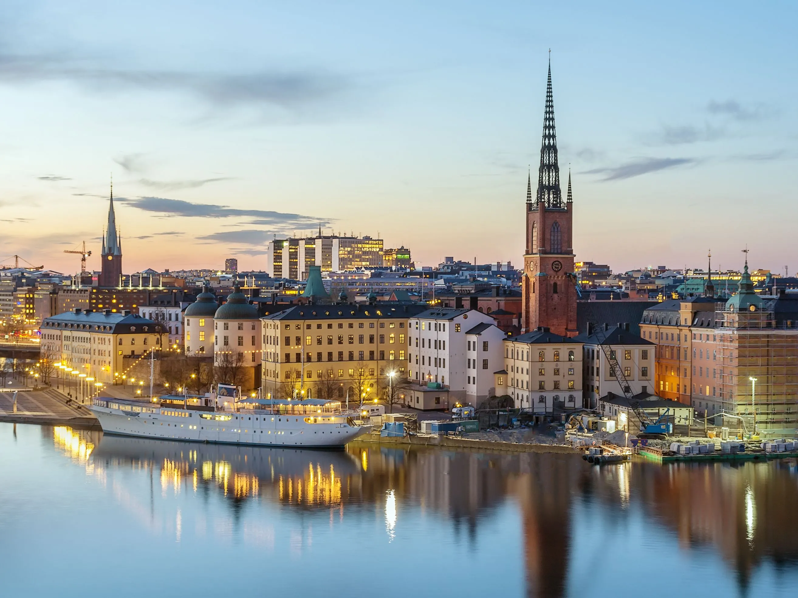

ПОНУДА ЦЕЛА ГОДИНА

СТОКХОЛМ И АРХИПЕЛАГОТ
Стокхолм, Шведска
24.09 - 28.09
Откријте го прекрасниот Стокхолм, еден од најшармантните градови во Скандинавија. Истражете го историскиот Гамла Стан, уживајте во прекрасната архитектура и прошетајте покрај морето. Патувањето продолжува со незаборавна тура низ стокхолмскиот архипелаг, составен од илјадници острови и прекрасни природни пејзажи. Совршена понуда за љубителите на градска култура и природа во текот на целата година.
СКАНДИНАВСКА АВАНТУРА
Главниот град на Шведска и еден од најубавите скандинавски градови, распослан на повеќе острови и опкружен со вода. Градот е познат по својата прекрасна архитектура, историските знаменитости, живописните пешачки улици и уреденото крајбрежје. Стокхолм нуди одлична комбинација на историја, култура, музеи, шопинг и модерна скандинавска атмосфера.
Историското срце на Стокхолм и еден од најстарите и најшармантните зачувани стари градови во Европа. Тесните калдрмисани улички, шарените историски куќи и малите плоштади создаваат уникатна атмосфера и нудат прекрасна можност за прошетка, фотографирање и запознавање со историјата на шведската престолнина..
Еден од највпечатливите природни предели во околината на Стокхолм, составен од илјадници острови, островчиња и живописни крајбрежни населби. Крстарењето низ архипелагот овозможува уживање во прекрасните природни пејзажи, мирните води и типичната скандинавска природа.
Еден од најпознатите музеи во Стокхолм, посветен на историскиот брод Васа, кој потонал во 1628 година и бил извлечен од морето по повеќе од три века. Посетата нуди уникатна можност за запознавање со шведската поморска историја, животот во 17 век и приказната за еден од најпознатите историски бродови во светот.
Состанок со групата на аеродром во Скопје, 2 часа пред летот. Следува директен лет до Стокхолм и пристигнување на аеродромот. По завршувањето на аеродромските процедури следува организиран трансфер до хотелот и сместување. По сместувањето е предвидено време за одмор и освежување. Во попладневните часови следува прва прошетка низ околината и запознавање со Стокхолм. Вечерта е слободна за вечера и индивидуални активности. Ноќевање во хотел.
Појадок во хотелот и организирано разгледување на Стокхолм. Следува прошетка низ центарот на градот и посета на главните знаменитости, плоштадите, пешачките улици и крајбрежниот дел. Предвидено е време за фотографирање и уживање во градот. Потоа следува слободно време за ручек, кафе, шопинг и индивидуално разгледување. Во попладневните часови е предвидена дополнителна прошетка низ централните делови на Стокхолм. Вечерта е слободна за одмор и индивидуални активности. Ноќевање во хотел.
Појадок во хотелот и организирана посета на Гамла Стан. Следува прошетка низ тесните улички, плоштадите и шармантните делови на стариот град. Потоа е предвидена посета на музејот Васа и разгледување на познатиот брод Васа. Следува слободно време за ручек, кафе и фотографирање. Во попладневните часови е предвидено слободно време за индивидуално разгледување и шопинг. Вечерта е слободна за одмор и индивидуални активности. Ноќевање во хотел.
Појадок во хотелот и организирано заминување кон пристаништето. Следува крстарење низ Стокхолмскиот архипелаг и уживање во прекрасните острови, крајбрежјето и природните пејзажи. Во текот на крстарењето е предвидено време за фотографирање и одмор. По завршувањето на крстарењето следува слободно време за ручек и индивидуални активности. Попладнето е предвидено за враќање во Стокхолм и слободна прошетка низ градот. Вечерта е слободна за вечера и одмор. Ноќевање во хотел.
Појадок во хотелот и одјавување согласно предвиденото време. По собирањето на багажот следува организиран трансфер до аеродромот во Стокхолм. По пристигнувањето следува пријавување за летот и завршување на потребните аеродромски процедури. Потоа следи директен лет до Скопје. По пристигнувањето и преземањето на багажот завршува организираното патување.